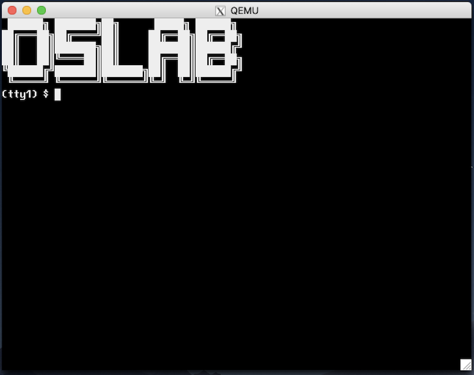

L2: 内核线程管理 (kmt)
⏰ 截止日期
Soft Deadline: 2023 年 5 月 14 日 23:59:59。
本实验在 L1 代码的基础上完成。但如果你完全没有完成 L1，依然可以合并代码并开始 L2 (例如使用一个非常简单的 kalloc/kfree 实现)。 在命令行中
git pull origin L2下载框架代码。
本次实验提交时，需要设置环境变量 (如果你将 export 写在了 Makefile 里，需要相应作出修改，否则将提交到过往的实验)。MODULE为L2本次实验的报告直接在
kernel/目录下原先的实验报告基础上添加。拒绝内卷：除非特殊情况，本次实验的实验报告不建议超过 2 页 A4 纸。请在实验报告中描述你在实验中遇到的特别值得一提的事件，例如你代码的架构设计、特别精巧的实现、遇到印象深刻的 bug 等。
1. 背景
我们已经在课堂上展示了如何利用中断机制实现状态机之间的切换：在线程执行时中断到来，操作系统代码开始执行并保存处理器运行的寄存器现场；在中断返回时，可以选择任何一个进程/线程已经保存的寄存器现场恢复。在这个实验中，我们扩展课堂上的示例代码，实现多处理器操作系统内核中的内核线程 API (就像 pthreads 库，或是课堂上展示的 thread.h)。在完成这个实验后，你就得到了一个真正可以并行运行多任务的嵌入式操作系统。
2. 实验描述
2.1 实验总览
这个实验在 pmm 的基础上，增加中断和线程管理的功能，允许操作系统代码注册中断发生时的回调函数和创建线程：
- 相比 Lab1, os 模块中新增了
trap和on_irq两个函数，分别是系统中唯一中断/系统调用的入口和中断处理程序的回调注册； - pmm 模块保持不变，你可以沿用 Lab1 的实现，但因为这个实验中多了中断，你需要对你已有的代码做一些小的增强，主要是自旋锁需要保证不被中断打断；
- 新增了 kmt 模块，你需要完成
struct task,struct spinlock,struct semaphore的定义并实现其中全部的 API。
不用定义结构体也能编译通过？
没错。只要我们不引用
struct task的任何成员，我们在代码中使用struct task(或它的别名task_t) 就不会引起问题。例如，为函数传递struct task *的指针是没问题的。但因为你需要实现具体操作这些结构体的函数，因此你需要定义它们。你可以把你们的定义放在
include/目录下的某个头文件里。
typedef Context *(*handler_t)(Event, Context *);
MODULE(os) {
void (*init)();
void (*run)();
Context *(*trap)(Event ev, Context *context);
void (*on_irq)(int seq, int event, handler_t handler);
};
MODULE(pmm) {
void (*init)();
void *(*alloc)(size_t size);
void (*free)(void *ptr);
};
typedef struct task task_t;
typedef struct spinlock spinlock_t;
typedef struct semaphore sem_t;
MODULE(kmt) {
void (*init)();
int (*create)(task_t *task, const char *name, void (*entry)(void *arg), void *arg);
void (*teardown)(task_t *task);
void (*spin_init)(spinlock_t *lk, const char *name);
void (*spin_lock)(spinlock_t *lk);
void (*spin_unlock)(spinlock_t *lk);
void (*sem_init)(sem_t *sem, const char *name, int value);
void (*sem_wait)(sem_t *sem);
void (*sem_signal)(sem_t *sem);
};
2.2 OS (Operating Systems) 模块
2.2.1 操作系统的主循环
os 模块是操作系统主循环的代码，主要负责系统的初始化和中断响应。我们在上一个实验的框架代码中，已经包含了以下函数：
os->init()会在系统启动时被启动的第一个处理器调用 (仅初始化一次)，它在单处理器状态下完成必要的初始化——因此你不用担心数据竞争等麻烦；os->run()是操作系统启动后每个处理器必须执行的一些代码。我们假设os->run()时已经完成了所有初始化工作，每个处理器都会调用同一份os->run。
你可能会修改你已有的实现，例如你现在的 os->init() 看起来可能长这样：
static void os_init() {
pmm->init();
}
但你可能会在其中增加 kmt 模块的初始化：
static void os_init() {
pmm->init();
kmt->init();
}
os->run()的行为改变与上个实验不同，我们会调用你的
os->run()。因此如果你有任何测试代码 (如创建一些用户线程的kmt->create)，可以考虑以下两种方法：
- (不推荐) 写在
main函数中，Online Judge 会使用另一份 framework，所以你插入的所有测试代码都不会被执行。- (推荐) 写在
os->init中，但使用一些预编译指令确保在 Online Judge 时测试代码不会被执行 (启动一个 “空的” 操作系统)。
理解 os 模块，要从程序执行的入口开始，以下是框架代码执行的流程：
int main() {
ioe_init();
cte_init(os->trap);
os->init();
mpe_init(os->run);
return 1;
}
在每个处理器调用 os->run 执行 (并最终被中断) 后，操作系统就化身成为了中断处理程序。调用 mpe_init() 之后，所有的处理器都开始执行 os->run()，操作系统正式启动，而启动代码就成为了当前处理器上的第一个线程——这个线程是这个处理器上的 “idle” 线程：当系统中没有线程可以被调度的时候，我们的处理器也必须执行点什么，直到下一次中断到来，因此它可以是一个死循环：
static void os_run() {
iset(true);
while (1);
}
主循环的另一部分是本次实验新增的中断处理程序的入口
os->trap(ev, context): 中断/异常处理程序的唯一入口。中断后，AbstractMachine 会将所有寄存器保存到堆栈上 (就像 xv6 那样)，然后调用os->trap()，并且在函数返回后，将os->trap()返回的寄存器现场恢复到 CPU 上。
直到 mpe_init() 之前，都只有一个处理器在执行 (编号为 0 的 CPU，此时调用 cpu_current() 会返回 0)。在上面的代码中，cte_init(os->trap) 指定了os->trap 是唯一的中断处理程序，所有的处理器发生中断都会统一调用 os->trap()。在中断的时候做什么完全是由你决定的。
小心多处理器中断
因为每个处理器都会被中断，这让
os->trap()变成了被并行执行的代码。因此，如果里面有任何共享变量，你需要用自旋锁保护好 (并且要小心死锁，并小心地管理中断标志位)，消灭数据竞争——还记得 “可见性” 的例子吗？
2.2.2 中断处理程序
os 模块的另一个重要功能是管理系统中的中断处理程序——我们并不希望大家在每当有一个新的功能以后，都直接去改 os->trap 的代码，因此我们提供了另一个 API:
os->on_irq(seq, event, handler): 注册一个在中断时调用的 callback。
on_irq 的含义是在 os->trap(ev, ctx) 执行时，当 ev.event (事件编号) 和 event 匹配时，调用 handler(event, ctx);。其中：
seq决定了 handler 被调用的顺序，seq小的 handler 先被调用。seq相同的按任意顺序调用；- 当
event == EVENT_NULL时，在任何中断/异常时都调用handler； - 我们允许一个且仅一个 handler 返回一个
Context，在中断返回时恢复到这个 conetxt。当多个 handler 都返回 context 时，是 undefined behavior。
如果我们看 xv6 的代码 (trap.c)，我们会看到中断到来时的 if-else 结构：
int irq = plic_claim();
if(irq == UART0_IRQ){
uartintr();
} else if(irq == VIRTIO0_IRQ){
virtio_disk_intr();
} else if(irq){
printf("unexpected interrupt irq=%d\n", irq);
}
我们用 on_irq 机制实现了上述代码的灵活控制: os 模块现在变得非常简单，它甚至完全不需要知道其他任何模块的存在。在参考代码中，os->trap() 的实现类似于：
static Context *os_trap(Event ev, Context *ctx) {
Context *next = NULL;
for (auto &h: handlers_sorted_by_seq) {
if (h.event == EVENT_NULL || h.event == ev.event) {
Context *r = h.handler(ev, ctx);
panic_on(r && next, "returning multiple contexts");
if (r) next = r;
}
}
panic_on(!next, "returning NULL context");
panic_on(sane_context(next), "returning to invalid context");
return next;
}
防御性的 Assertions
注意到上述代码中一些防御性的 assertions，它们检查 specifications 是否被违反。在程序的各个地方添加防御性的 assertions 能最大程度保护你们不受伤害——例如在某个罕见的执行路径上，你忘记返回 context，或是 context 已经被损坏，你会得到 assertion failure 而不是虚拟机的神秘重启。
sane_context如何实现？不妨可以考虑例如cs,rip,rflags等寄存器合法的值。此外，当前的 assert failure 只能打印出失败的位置。如果你写一小段代码，能够打印出 call stack frame，那会极大程度简化你们调试的过程——虽然这不是必须的。
借助 os->on_irq，我们可以 “注册” 若干中断处理程序，在适当的时机做适当的事情——这类似于 “面向切面编程” (Aspected-Oriented Programming, AOP) 的设计。此时，我们的 os 模块并不需要知道系统中有多少中断、多少设备驱动程序可能会处理中断，例如，如果我们希望在 I/O 设备发生中断时，向键盘驱动的信号量执行一个 V 操作，我们只需要：
static Context *input_notify(Event ev, Context *context) {
kmt->sem_signal(&sem_kbdirq); // 在IO设备中断到来时，执行V操作唤醒一个线程
return NULL;
}
void input_init() {
// seq == 100 是随意设置地，我们并不在意何时调用
os->on_irq(100, EVENT_IRQ_IODEV, input_notify);
...
}
甚至在 jyy 的参考实现中，寄存器现场保存、执行调度程序的代码，也都是用 on_irq 注册的 (尽管你并不必要这么做，可以把这部分代码直接写在 os->trap 中)：
// thread.c，线程管理
static void kmt_init() {
...
os->on_irq(INT_MIN, EVENT_NULL, kmt_context_save); // 总是最先调用
os->on_irq(INT_MAX, EVENT_NULL, kmt_schedule); // 总是最后调用
...
}
如果上述代码被执行，那么按照注册时的 sequence number 进行调用：
- 在时钟中断发生时依次调用
kmt_context_save(INT_MIN) 和kmt_schedule(INT_MAX)； - 在键盘中断发生时依次调用
kmt_context_save(INT_MIN),input_notify(100), 和kmt_schedule(INT_MAX)
线程/中断安全性 ：每个处理器都会分别响应中断——iset仅对当前执行的处理器有效。因此，你可以假设os->on_irq在单处理器、中断关闭下os->run被调用之前全部执行完毕。
2.3 PMM (Physical Memory Management) 模块
pmm 与之前行为一致，但因为它被调用的场景增加了 (并不是每个 CPU 只是连续不断地执行代码，而是 CPU 可能被中断)，我们需要稍稍对它进行改进：
线程/中断安全性 ：允许任意线程/中断处理程序调用pmm->alloc和pmm->free。
具体来说，我们要求:
- 可以在中断里调用
pmm->alloc()和pmm->free()； - 内存分配/回收时，简单起见，不允许被中断。
可以用以下方法简单做到：
static void *kalloc_safe(size_t size) {
bool i = ienabled();
iset(false);
void *ret = kalloc(size);
if (i) iset(true);
return ret;
}
static void kfree_safe(void *ptr) {
int i = ienabled();
iset(false);
kfree(ptr);
if (i) iset(true);
}
我们不推荐你在 pmm 中使用 kmt->spinlock，而是保持现有的实现不变，因为你可能在 kmt->init() 的时候调用 pmm->alloc()，此时自旋锁可能还没有完成必要的初始化。
2.4 KMT (Kernel Multi-Threading) 模块
2.4.1 模块初始化
kmt->init() 负责初始化必要的数据，例如分配一些重要的数据结构。我们预期你会在 os->init() 时调用 kmt->init()。整个系统启动只调用一次 kmt->init()。
2.4.2 线程管理
int (*create)(task_t *task, const char *name, void (*entry)(void *arg), void *arg);
void (*teardown)(task_t *task);
其中 create 在系统中创建一个线程 (task_t 应当事先被分配好)，这个线程立即就可以被调度执行 (但调用 create 时中断可能处于关闭状态，在打开中断后它才获得被调度执行的权利)。我们假设 create 创建的线程永不返回——但它有可能在永远不会被调度执行的情况下被调用 kmt->teardown 回收。
teardown 相应回收为线程分配的资源——例如你可能会为 task_t 动态分配内存：
int kmt_create(task_t *task, const char *name, void (*entry)(void *arg), void *arg) {
...
task->stack = pmm->alloc(STACK_SIZE); // 动态分配内核栈
...
}
这部分的内存需要在 teardown() 时被回收。线程只有在永远不会被调度到处理器上执行的前提下才能被回收。你可以假设回收的时候线程不再持有任何自旋锁或在信号量上等待。
线程/中断安全性 ：允许任意线程调用create/teardown。不会在中断处理程序中调用create/teardown。
2.4.3 自旋锁
void (*spin_init)(spinlock_t *lk, const char *name);
void (*spin_lock)(spinlock_t *lk);
void (*spin_unlock)(spinlock_t *lk);
lock-unlock 实现保护一段强原子性 (任何其他线程、中断处理程序、其他处理器都不能同时得到同一把锁)：
- 允许在中断处理程序中调用自旋锁；
- 允许任意在任意处理器的任意线程中调用自旋锁；
spin_lock将会关闭处理器的中断，因此对一个处理器而言，持有任何一个自旋锁之后就不会再发生线程切换；spin_unlock在解除最后一个当前处理器持有的自旋锁之后，需要将处理器的中断状态恢复。例如在中断处理程序中，中断是关闭的，因此spin_unlock不应该打开中断；但在一般的线程中，spin_unlock后应当恢复处理器的中断。
线程/中断安全性 ：允许任意线程调用spin_init,spin_lock和spin_unlock。中断处理程序允许调用spin_lock和spin_unlock。
2.4.4 信号量
void (*sem_init)(sem_t *sem, const char *name, int value);
void (*sem_wait)(sem_t *sem);
void (*sem_signal)(sem_t *sem);
在信号量初始化时，value 指定了它初始的数值。初始时 value == 1 可以把信号量当互斥锁；初始时 value == 0 可以把信号量作为生产者-消费者缓冲区管理实现。sem_wait 和 sem_signal 分别对应了 P/V 操作。
- 允许在线程中执行信号量的
sem_wait操作。在 P 操作执行没有相应资源时，线程将被阻塞 (不再被调度执行)。中断没有对应的线程、不能阻塞，因此不能在中断时调用sem_wait； - 允许在任意状态下任意执行
sem_signal，包括任何处理器中的任何线程和任何处理器的任何中断。
在信号量实现时，大约需要做以下几件事 (任何一本操作系统教材上都会提到类似的实现)：
void sem_wait(sem_t *sem) {
spin_lock(&sem->lock); // 获得自旋锁
sem->count--; // 自旋锁保证原子性
if (...) {
// 没有资源，需要等待
...
mark_as_not_runnable(current); // 当前线程不能再执行
}
spin_unlock(&sem->unlock);
if (...) { // 如果 P 失败，不能继续执行
// (注意此时可能有线程执行 V 操作)
yield(); // 引发一次上下文切换
}
}
线程/中断安全性 ：需要实现多处理器安全性。允许任意线程调用sem_init,sem_wait和sem_signal。中断处理程序不可睡眠，但可以调用sem_signal。
3. 正确性标准
native 处于长久没有维护的阶段，因此为了实验的稳定性，我们总是以 qemu (x86-64 和 i386) 为准。Online Judge 评测时只有 x86-qemu 和 x86_64-qemu。
我们测试代码的时候，会替换我们的 framework 目录，因此你对其中文件 (例如 kernel.h) 的任何修改都会被消除。注意到我们的测试代码需要数据结构 (sem_t 等) 的定义，而这些定义并不在 kernel.h 中，因此你需要在 os.h 中包含它们，否则测试代码将无法编译。
⚠️⚠️⚠️ 重要的注意事项
我们的代码 (
main) 看起来是这样的：#include <klib.h> #include <klib-macros.h> #include <am.h> #include <common.h> #include <os.h> ... // 此处省略测试代码 int main(const char *args) { ioe_init(); cte_init(os->trap); os->init(); init_workload(args); mpe_init(os->run); }注意到我们的测试代码需要数据结构 (
sem_t等) 的定义，而这些定义并不在kernel.h中，因此你需要在common.h中包含它们，否则测试代码将无法编译。此外，不要打印多余的输出。在任何时候 (锁、中断、……) 时打印多余的输出都可能导致 Wrong Answer。因此我们建议你使用自己的 log 或 printk 函数 (而不是 printf; 我们的测试程序会使用 printf)，且它们的行为由预编译指令控制，仅在你本地编译时才打印数据。
当然了，系统启动时 (
mpe_init之前) 打印少量日志是没问题的。
3.1 Safety 和 Liveness
在任意时刻，操作系统中都可能有多个线程，你需要设计调度的策略在多个处理器中调度这些线程，使系统中能够被执行的线程尽可能不发生饥饿。
一个特别的正确性要求 (仅针对 Hard Tests)
在线程数不过多的前提 (十几) 下，我们要求每个可运行的线程，给定足够长 (例如数秒) 的时间，能够被调度到每个处理器上执行。这个需求看起来很简单：稍微改一改
thread-os.c的调度器就行了。但你要警惕了！这可能比你想象的困难得多。
经过 Lab1 的洗礼，你们应该意识到，写出正确的程序要从简单、有效的策略开始，盲目使用复杂的策略只会让你陷入 Wrong Answer 的泥潭。
3.2 官方测试用例
官方测试用例使你的 “操作系统” 看起来更像是个操作系统。但它并不能作为 “压力测试” 来帮助你检查 kmt 实现的正确性。我们为大家提供了 dev 模块及其实现 (已经包含在框架代码中)：
typedef struct device device_t;
MODULE(dev) {
void (*init)();
device_t *(*lookup)(const char *name);
};
我们的官方测试用例还包含了以下设备的驱动 (我们将会在课程进展到一半左右的时候讲解设备在操作系统上的抽象，此时会讲解什么是设备驱动程序)：
input，支持读取键盘的输入；fb，支持一个软件模拟的 2D 显示加速器的写入 (我们打算未来把这个显示加速器用真正的硬件实现)；tty1,tty2, 两个支持读写的虚拟终端，使用 Alt-1, Alt-2 在虚拟中断之间切换；sda, 支持读写的物理磁盘。你可以从中读出操作系统内核的 ELF 文件。
在这个实验中，你并不需要调试正确所有的设备驱动程序 (但调试不通过一般意味着 Online Judge 会测试失败)。但在下一个实验中，我们会用到这些设备驱动程序。
代码合并后，你需要在 os->init() 中手工添加设备模块的初始化 dev->init()。如果实现正确，就能完成中断处理程序 (和若干设备相关线程) 的初始化。你不需要添加额外的代码，就能看到闪烁的光标，并且能看到输入字符的回显。
此后，你就可以创建若干访问设备的线程，例如你可以为每个 tty 设备创建一个线程：
static void tty_reader(void *arg) {
device_t *tty = dev->lookup(arg);
char cmd[128], resp[128], ps[16];
snprintf(ps, 16, "(%s) $ ", arg);
while (1) {
tty->ops->write(tty, 0, ps, strlen(ps));
int nread = tty->ops->read(tty, 0, cmd, sizeof(cmd) - 1);
cmd[nread] = '\0';
sprintf(resp, "tty reader task: got %d character(s).\n", strlen(cmd));
tty->ops->write(tty, 0, resp, strlen(resp));
}
}
static void os_init() {
...
kmt->create(task_alloc(), "tty_reader", tty_reader, "tty1");
kmt->create(task_alloc(), "tty_reader", tty_reader, "tty2");
}

忽然就有 “操作系统” 的样子了！
哇！做完实验我好像有 “操作系统” 的感觉了！然后再看看 trivial-os.c 的代码，仿佛我看到了写出一个真正操作系统的希望。没错——你在这个实验中活下来，就意味着你已经掌握操作系统原理中最重要的部分：如何实现处理器的分时虚拟化。接下来，你只需要理解：
- 文件系统是磁盘上的数据结构；
- 进程是拥有独立地址空间的线程，
你其实就在 high-level 上对现代操作系统有了一个准确的认识 (当然还有无数细节)，这门课的目标也就达到了。因为我们对你的
include/目录中的代码不做任何限制，你可能会出现一些诸如结构体未定义等问题，照常解决即可。如果发现测试用例中的 bugs，请向我们报告。另外，提交时请不要激活官方测试用例 (例如启动
dev模块)，它可能会导致测试失败。
3.3 Online Judge 上的测试用例
与 L1 类似，我们的测试代码会使用 Online Judge 的 framework 代码 (包含一些测试用例、额外的运行时检查等)。框架代码会调用你的 os->init() 和 os->run()，就像下面的代码那样：
static void producer(void *arg) { ... }
static void consumer(void *arg) { ... }
static void create_threads() {
...
kmt->create(pmm->alloc(sizeof(task_t)),
"test-thread-1", producer, xxx);
kmt->create(pmm->alloc(sizeof(task_t)),
"test-thread-2", consumer, yyy);
...
}
int main() {
ioe_init();
cte_init(os->trap);
os->init();
create_threads();
mpe_init(os->run); // all cores call os->run()
return 1;
}
我们的 producer/consumer 可能就像上课的例子那样，管理 empty 和 fill 两个信号量，分别打印左括号和右括号，然后我们会检查输出是否满足 (1) 是合法括号序列的一个前缀; (2) 括号嵌套的深度是否超过要求。与 Lab1 一样，我们在测试时会链接一个我们实现正确的 klib，所以大家即便 klib 有 bug，也不必太过担心。
4. 实验指南
4.1 坐下来，读一读代码
不知道实验要求在说什么？
拿到这个实验的第一感觉就是：实验要求也太 tmd 长了。这玩意还要 Online Judge，还不得死人了？这是很正常的。不要慌，因为你们已经有过 Lab1 的经验，现在你们可以多花一点时间来读代码了。
我们推荐大家阅读的两份代码：
- thread-os.c: 一个单处理器、分时调度固定数量线程、round-robin 调度的嵌入式操作系统。课堂上我们讲解了如何调试它
- xv6 的代码。随着课程的深入，我们也会在课堂上讲解这部分代码
上课时的代码调试演示对实验的生存是至关重要的。例如，你应该 thread-os 在一次时钟中断后的代码，结合 AbstractMachine 的文档，你就能对中断到底发生了什么、AbstractMachine 到底做了什么有更加深入的认识——更重要的是，thread-os.c 是大家实现 Lab2 的一个 “基础性” 的框架。不要忘记了，我们的 Lab2 就是要实现丰富版的 thread-os.c!
而 thread-os.c 中比较重要的是，首先它注册了系统全局的中断处理函数：
cte_init(on_interrupt);
而这个函数在我们的实验中的对应就是 os->trap()。于是你会知道 os->trap 的代码会和 on_interrupt 比较像：
Context *on_interrupt(Event ev, Context *ctx) {
if (!current) {
current = &tasks[0]; // First trap
} else {
current->context = ctx;
current = current->next;
}
return current->context;
}
而你再去看 os->trap 和 os->on_irq 的实验要求，你就能发现我们实验的需求合情合理。如果你没有很好地理解这些代码的工作原理而盲目地 “直接动手上实验”，很可能会遇到很大的挫折——你的程序很可能会出现各种奇怪的问题，而你却不知道从何下手。但如果你调试过 thread-os 或者 xv6 的代码，则会更有底气一些。
4.2 操作系统上的程序
现在，我们的操作系统还不支持进程、文件系统等，但的确有了完善的物理内存管理和线程管理 API。换句话说，我们实现的是一个支持线程的 “嵌入式操作系统”，它能运行在没有 MMU 的硬件上。
为这样的一个操作系统编写 “应用程序”，就是直接在操作系统代码中静态链接一些函数，这些函数可以作为线程的入口，并且函数可以任意访问内核数据、直接以函数调用的形式调用操作系统内的 API。为了更好地理解实验要求，我们不妨给出一个课堂上 “生产者-消费者” 在我们操作系统上运行的例子。
首先，我们定义信号量 (kmt 实验需求部分)，并且用宏包装一下 P/V 操作 (这一步完全不必要，只是为了让我们的代码看起来和课堂上讲解得一样)：
sem_t empty, fill;
#define P kmt->sem_wait
#define V kmt->sem_signal
接下来，我们写出个生产者/消费者线程的代码，就跟我们课堂上展示的 threads.h 完全一样：
void Tproduce(void *arg) { while (1) { P(&empty); putch('('); V(&fill); } }
void Tconsume(void *arg) { while (1) { P(&fill); putch(')'); V(&empty); } }
然后，我们在操作系统初始化 (os->init) 中创建若干个生产者/消费者线程，其中利用了物理内存的分配：
static inline task_t *task_alloc() {
return pmm->alloc(sizeof(task_t));
}
static void os_init() {
pmm->init();
kmt->init(); // 模块先初始化
#ifdef DEBUG_LOCAL
kmt->sem_init(&empty, "empty", N);
kmt->sem_init(&fill, "fill", 0);
for (int i = 0; i < NPROD; i++) {
kmt->create(task_alloc(), "producer", Tproduce, NULL);
}
for (int i = 0; i < NCONS; i++) {
kmt->create(task_alloc(), "consumer", Tconsume, NULL);
}
#endif
}
注意到上面的 DEBUG_LOCAL 宏。你们可以把这个宏的定义加载你们的 CFLAGS 里，这样你们在本地调试的时候就会创建用于测试的线程，但在 Online Judge 上则不会。这个行为对大家来说很重要：你们打印任何多余的输出，都可能导致 Wrong Answer。这个技巧同样可以用于在 Online Judge 上关闭额外的运行时检查，提高程序的执行速度。
如果你的代码实现正确，在模拟器上运行 (可以使用 smp=2, smp=4 等运行启动多个处理器) 能够看到打印出正确的括号序列：总是合法括号序列的前缀，且括号嵌套的深度不超过 5。带着这样的一个具体的操作系统的小 “测试”，你能更好地理解框架代码——它其实并不复杂。
如果代码实现的正确？
你们在编程的时候，一定会遇到无数诡异的 bug，跑着跑着虚拟机就挂了，而且错得非常离谱，完全不知道发生了什么。对于并发程序，更难受的是可能要运行很多次，或者在某个特定的条件下 bug 才会触发。但你都相信 (1) 机器永远是对的; (2) 未测代码永远是错的。
当然，我们不排除 AbstractMachine 有 bug、gcc 有 bug、qemu 有 bug，甚至是你的处理器有 bug。但最终无论是哪里的问题，只要使用正确的编程方式，你最终都能找到这个 bug，机器永远是对的。处理器的 bug 是它的一个 “feature”。
4.3 在 Bug 中活下来
因此你实际回过头看，这个实验并不需要实现多少代码——比较紧凑的参考实现仅仅小几百行代码——不就是线程、自旋锁和信号量，加上一些零碎的代码 (中断处理的入口等) 嘛！那为什么实验要求要写那么长呢？还特别用红色字和灰色的底色标出 “线程/中断” 安全？是因为我们希望你的代码在多处理器、中断都存在的情况下保持正确。这不是一句空话，你下面会看到它实际的具体含义。或者说，你只有在做完实验以后，才会对下面这些话产生真正的理解：
- 代码可以在多个处理器上被同时调用。因此你需要小心地保证原子性、顺序、可见性。千万小心：
kmt->create(),kmt->sem_signal()等所有函数都可能同时在多个处理器上被调用。你现在觉得这句话很可笑，你早就知道，但你调过 bug 就知道厉害了。 - 在中断处理程序中可以调用自旋锁。实际上，一个 CPU 的中断处理程序可以和另一个 CPU 访问同一个共享数据结构 (例如在中断中向链表里插入一个元素，这个链表被另一个线程读取)，因此自旋锁是保证正确性的重要手段。
- 小心数据竞争。一切共享的数据都可能会产生数据竞争——如果你没有保护好的话。有些内存访问悄悄在你意想不到的时候发生，例如对堆栈的访问——我们已经做出了提示，小心！小心！
很快写着写着你就会发现自己的代码出 bug 了，有可能是并发的，有可能只是顺序的逻辑实现错了。如果出现了莫名其妙的异常、虚拟机神秘重启等情况不要惊慌，机器永远是对的，坐下来调代码吧。
4.3.1 调试理论：再次复习
在这两个学期的课程里，我们反复提到了调试理论——我们犯下的 bug 是 fault，它在运行时导致系统某个数值不符合预期 (specification), 这是一个 error，而只有最终虚拟机神秘卡死/重启/输出奇怪内容，我才真正证明了程序里 bug 的存在 (failure)。我建议大家再复习一下我们课程的视频 (并发 bug)，我们试图用这次课程来启发你，实现可靠软件系统是有迹可循的。
为了让 bug (fault) 更容易被找到，我们有两个想法：
- fault → error, 让更多的 bug 能在运行时被触发出来。这是通过详尽的测试实现的——你们已经在 Lab1 里饱受测试不充分的折磨了；而你们要知道，Lab1 Online Judge 的测试远谈不上充分。
- error → failure, 让运行时错误的状态能尽快地被捕获。我们的 klib 里已经提供了以下有用的机制帮助你检查：
assert, 你可以通过 assert 将程序应该满足的 specification (但代码未必体现) 写出来panic, 立即退出，通常是因为进入了某种不正常的状态panic_on, 条件成立时退出，检查不正常状态并退出
想放弃？
相信大家有无数次想放弃。算了，成绩不要了。算了，抄作业吧。如果你坚持把 “独立完成” 想象成是对自己的训练，这是非常有益的。
在适当的地方加上 printf 和 assert 能帮助你快速定位到程序中出错的状态 (比如在中断到来时打印寄存器的现场，能快速帮你定位出现异常的位置)，缩小bug 的检查范围。
4.3.2 更好的 log 方式
相信大家都有过不停地加 printf, 删掉 printf 的调试体验吧。这感觉可不太好，找了一大圈，最后发现一开始删掉的 printf 打印的信息才是最有用的，不过一整天就已经过去了。
你可以考虑使用一些预编译选项控制 log 的开关：
#ifdef TRACE_F
#define TRACE_ENTRY printf("[trace] %s:entry\n", __func__)
#define TRACE_EXIT printf("[trace] %s:exit\n", __func__)
#else
#define TRACE_ENTRY ((void)0)
#define TRACE_EXIT ((void)0)
#endif
void f() {
TRACE_ENTRY;
printf("This is f.\n");
TRACE_EXIT;
}
当然你也可以使用一些变量控制 log 的开关，例如设置 print_registers_on_irq。
4.3.3 使用调试器
让然，如果各种 printf 和 log 都没办法帮你找到问题，也许上 gdb 是个不错的主意。框架代码里故意没有提供 make debug 的选项，但我们已经频繁地在课上展示了如何调试，qemu 为我们提供了丰富的命令行选项：
-gdb能启动调试模式；-S能让虚拟机在收到调试命令前不执行执行；- 在 gdb 中可以用
target命令连接远程调试； - 用
.gdbinit(或-x,-ex选项) 能实现脚本的预先执行。
此外，printf 并不是唯一调试信息的来源。上课的同学应该还有印象，我们讲解过如何使用 qemu monitor 中的 log 来调试神秘的 CPU 重启。当你真正走投无路的时候，你会发现这些工具才是调试系统软件里最重要的设施。
不信邪？
如果只是写几十上百行的 OJ 程序，无论你习惯多么的坏，多多少少总是能调试出来的。但如果要维护更大的程序，用上正确的工具就能帮上大忙了。
因此，你在读完上面那些文字的时候，你心里肯定想：这么麻烦，关我 $\times$ 事。对中枪的同学：当你实在找不到 bug 的时候，回来求 gdb 也许能帮你挽回几天的调试时间。这时候你就真正体会到基础设施的重要性了。
4.3.4 保护自己不受伤害
有些 bug 可能会非常难调试，这里举一个例子：栈溢出。也许已经有同学吃过苦头了：栈空间不是无限大的，而如果我们带着很大的局部变量或者递归很多层，栈就悄悄溢出了……在操作系统内核中，内核线程栈的溢出就显得更危险了，因为你可能会定义：
struct task_t {
int32_t id;
...
uint8_t stack[STK_SZ];
};
而栈溢出 (x86 的栈从高地址向低地址生长) 的后果就是线程的信息可能被覆盖，出现各种诡异 (难以理解) 的情况，而且有可能 bug 若隐若现，加一条 printf 也许就不触发了。如果想避免这种情况的发生，可以给栈的前后加一些栅栏缓冲 (fences)，或者金丝雀 (canaries)，我们上课时也讲解过。
同理，我们可以在 kalloc/free 的时候做一些 hacking，这样可以帮助你检查出很多类型的 bugs，例如你可以在 free 以后将内存全部填为某一个 magic number，然后在关键的 pointer deference 的地方插入
#define uaf_check(ptr) \
panic_on(MAGIC == *(uint32_t *)(ptr), "use-after-free");
*ptr ... // important pointer, e.g., current
uaf_check(ptr)
这些 defensive 的编程方式，帮助你把代码中应该满足的 specification 明确地在代码中写出来——我们优先假设我们的代码是有 bug 的，而不是没有 bug 的。在此假设下，做的检查越多，越能减少 bug 对我们调试带来的痛苦。
最后，这几节中介绍的知识都是完全没有用的——如果你不写够大的代码，做够系统的项目，你永远都不会用到这里的知识，永远都不会想把 C 语言的能力发挥到极致。这里的知识对理论考试几乎完全没有任何帮助。但正是在种种细节上追求完美才成就了大型软件系统的成功。优雅的代码赏心悦目。关于操作系统内核，xv6 绝对是一份了不起的佳作，看似平淡无奇的代码里参透着系统设计的智慧，值得大家品味。
4.4 实现能睡眠的互斥锁和信号量
自旋锁大家参考课堂讲解的代码和 xv6 实现即可。但自旋锁虽然保证了多处理器资源不会被完全浪费 (在没有死锁的前提下，至少有一个处理器能一直执行)，但关中断对于长临界区来说是非常糟糕的一件事：
- 长时间关中断会导致中断丢失；
- 其他处理器上试图获得锁的线程会大量浪费处理器资源自旋；
- 互斥中的代码可能需要等待中断 (例如希望互斥访问 I/O 设备的代码)。
因此，这个实验很重要的要求就是在进入临界区后允许中断和线程切换，从而避免处理器在没有获得锁的前提下消除 “空转”。进一步想，假如某个线程执行 lock(&lk) 已经获得了锁正在执行，此时另一个线程执行了 lock(&lk) 但需要等待——这个等待预期的时间会比较长，因此与其不停地自旋，我们不如在自旋失败的时候，主动切换到其他线程执行：
void lock(lock_t *lk) {
while (atomic_xchg(&lk->locked, 1)) {
yield(); // 切换
}
}
void unlock(lock_t *lk) {
atomic_xchg(&lk->locked, 0);
}
大家可以考虑一下，如果在关闭中断的时候 yield() 会发生什么。考虑清楚这个问题，请把计算机系统的执行想象成状态机；计算机的状态完全是由寄存器和内存的数值决定的，而控制中断开关的是 EFLAGS 寄存器中的 IF。
虽然 yield() 能在一定程度上解决问题，但依然不够完美——如果等待锁的线程很多，轮着调度一遍也要花费很多的开销，我们不如做得彻底一点，给每个线程设置状态：BLOCKED (在等待某个锁，此时不能被调度执行)；RUNNABLE (可被调度执行)。由于决定下一个运行的线程完全是在中断处理函数中完成的，因此我们不妨为每一个线程增加一个 status 变量 (在 Task 中)，然后修改我们的调度程序，就可以让 BLOCKED 的线程不再占用处理器执行：
typedef union task {
struct {
int status;
const char *name;
union task *next;
Context *context;
};
uint8_t stack[4096];
} Task;
...
Context *on_interrupt(Event ev, Context *ctx) {
if (!current) current = &tasks[0];
else current->context = ctx;
do {
current = current->next;
} while (
(current - tasks) % cpu_count() != cpu_current() ||
current->status != RUNNING // 只调度 RUNNING 状态的线程
);
return current->context;
}
没错，只要通过对 “进程状态” 的一个小小的 hacking，我们就可以进一步实现可以睡眠的互斥锁：
- 互斥锁由一把自旋锁保护，这大幅简化了我们理解的难度——同一把自旋锁保护的区域满足原子性、顺序和可见性；
- 如果在互斥锁上锁时，锁未被占用，则更新锁的状态并直接返回；
- 如果在互斥锁上锁时，锁已经被别的线程持有，则把当前线程放到锁的队列中，然后把当前线程标记为不
RUNNABLE。注意此时不能进入临界区执行，因此互斥锁函数不能立即返回。此时执行yield()“自陷” (trap) 进入中断处理程序，触发调度器执行； - 在互斥锁释放时，如果有线程在队列中等待，直接唤醒它即可。如果没有线程在等待，把锁恢复到可用的状态。
void mutex_lock(mutexlock_t *lk) {
int acquired = 0;
spin_lock(&lk->spinlock);
if (lk->locked != 0) {
enqueue(lk->wait_list, current);
current->status = BLOCKED;
} else {
lk->locked = 1;
acquired = 1;
}
spin_unlock(&lk->spinlock);
if (!acquired) yield(); // 主动切换到其他线程执行
}
void mutex_unlock(mutexlock_t *lk) {
spin_lock(&lk->spinlock);
if (!empty(lk->wait_list)) {
struct task_t *task = dequeue(lk->wait_list);
task->status = RUNNABLE; // 唤醒之前睡眠的线程
} else {
lk->locked = 0;
}
spin_unlock(&lk->spinlock);
}
理解这些算法时，我们不妨再次使用我们反复提到的工具：
把线程想象成人、把共享内存想象成物理世界。
在上述互斥锁的实现中个，如果 lock 调用失败，我们干脆不要自旋了，而是把自己加到一个等待的队列里，等到有人释放锁的时候再唤醒，这就好像是我们的lock/unlock 不再直接粗暴地去 “硬抢” (spin) 这把锁的使用权，而是类似于游泳馆那样的管理方法，现在先假设游泳池同一时间只能容纳一个人。每当同学 (线程) 试图获得锁 (试图进入游泳池) 时，都问管理员 (操作系统) 要手环。此时和管理员交谈的过程由一把自旋锁保护，防止其他同学强势插入打断。如果管理员 (操作系统) 此时有一个手环，就直接把手环给同学 (设置 locked = 1)，并且允许他进入游泳池 (mutex_lock 返回)。否则，线程就需要在管理员处排队 (然后线程睡眠，你可以理解成在队伍里专心致志地玩手机)，直到上一个同学出游泳馆 (mutex_unlock) 的时候把手环交换给管理员，戳一戳在队首的线程 (唤醒它)，队首的同学 (线程) 获得锁。此时如果没有排队的同学，管理员会把手环放到柜子里。

信号量和可以睡眠的互斥锁实现可以说是完全相同——只不过是我们的 locked 不再是一个 0 或 1 的数值，而是允许是更多的数值，它代表了手环的数量。